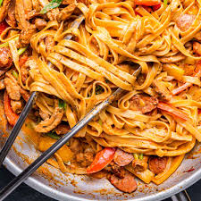

Cajun Pasta

Experience the bold flavors of this Cajun pasta recipe, perfect for a quick dinner!
This Cajun pasta is a delightful blend of spices and creamy sauce!
Ingredients
- 8 oz penne pasta
- 1 lb shrimp, peeled and deveined
- 1 bell pepper, sliced
- 1 onion, chopped
- 2 cloves garlic, minced
- 2 tbsp Cajun seasoning
- 1 cup heavy cream
- Salt and pepper to taste
Instructions
- Cook the penne pasta according to package instructions.
- In a large skillet, sauté the onion and bell pepper until softened.
- Add the garlic and shrimp, cooking until shrimp are pink.
- Stir in the Cajun seasoning and heavy cream, simmer for 5 minutes.
- Toss the cooked pasta with the sauce, season with salt and pepper.